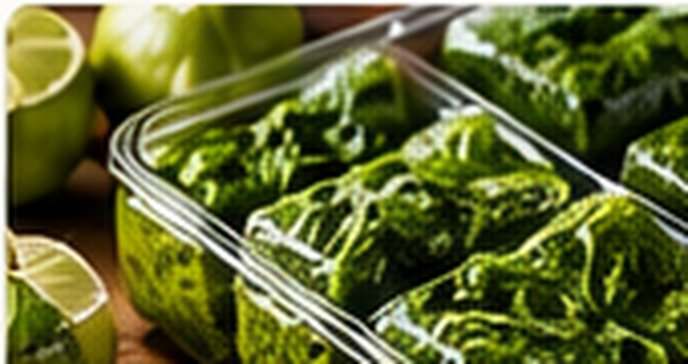

Mediterranean Herb Freezer Cubes
Mediterranean · Freezing · Approx. 20 minutes

Ingredients
- 1 cup washed, thoroughly dried mixed herb leaves (parsley, oregano, thyme and rosemary work well)
- ¼–½ cup water, as needed
- Optional: 1 tsp finely grated Meyer lemon zest
Directions
- Remove tough woody stems, then finely chop the herbs.
- Divide herbs among the wells of a clean ice-cube or silicone freezer tray.
- Add a little water to cover herbs and optionally sprinkle in lemon zest.
- Freeze promptly until solid, then transfer cubes to a labeled freezer bag.
- Add frozen cubes directly to cooked sauces, braises, soups or marinades.
Notes & serving ideas
Use for lemon-herb chicken, Mediterranean beef, roasted vegetables and rice pilaf. Water-based cubes avoid room-temperature herb-in-oil storage concerns. Best flavor within 2–3 months.
Use in Harvest Helper I made this → Add to pantry
Review & safe storage
Original recipe: These instructions have been reviewed against general preservation guidance, but the exact formula and shelf life have not been laboratory validated.
Keep frozen at 0°F (−18°C) or colder. Thaw at 40°F (4°C) or below in the refrigerator, or add frozen portions directly while cooking. Never thaw on the counter. Frozen storage times stated here describe quality, not a validated shelf life.
Wash hands, produce and equipment before preparation. Refrigerate perishable prepared food promptly, within 2 hours (1 hour above 90°F / 32°C). Use shallow containers for hot mixtures; do not wait for them to cool fully on the counter.
FoodSafety.gov handling and chilling guidance · Related preservation guidance
References describe general handling or the cited method; they do not validate this original recipe as a shelf-stable canning formula.